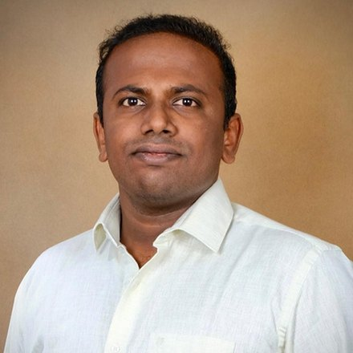

Chennai, India. Open to senior engineering and GenAI roles.
Lenin Pitchai
Lead Software Engineer
Ten years of shipping web apps, payment flows and internal business tools. Now building RAG assistants and agent workflows on top of the backends I already know.
Backend first, full stack when it counts.
Python and JavaScript engineer who has led teams, untangled production incidents and built the internal tools people actually use.

I build web applications and the services behind them, mostly in React, FastAPI, Django and Node. Over ten years that has meant banking support at Wipro, in-house web apps and automation at BOT VFX, leading a front-end and back-end team at Accenture, and today, as Lead Software Engineer at Optimum Infosystem, merchant integrations on a PayPal client project.
Right now I'm going deep on generative AI with LangChain, LangGraph and CrewAI: retrieval-augmented assistants that answer domain questions, and agentic workflows that slot into existing backends rather than replacing them.
- Based in
- Chennai, Tamil Nadu
- Experience
- 10+ years
- Core
- Python, JavaScript, React
- Learning
- LangGraph, CrewAI, Java
- Pronouns
- He / him
Ten years, traced.
Each role as a span on one timeline, newest at the top. Open a span to see what shipped and the stack behind it.
Selected work.
The projects that best show the range, from PL/SQL audits to retrieval-augmented assistants.
RAG assistant for domain queries
An assistant built with LangChain that answers domain-specific questions from internal knowledge, as part of bringing AI into backend systems on a PayPal client project.
Optimum Infosystem, 2025EUDI Wallet R&D
Research and prototyping on integrating the EU Digital Identity (EUDI) Wallet with PayPal's web application.
Optimum Infosystem, currentClaude Skills
Reusable, AI-assisted workflows for the team, packaged as Claude Skills.
Optimum Infosystem, currentMerchant-to-PayPal integration
Front-end and back-end feature in Kraken.js linking merchants to PayPal accounts for secure transaction processing, plus root-cause reports on live transaction issues.
Optimum Infosystem, 2025Developer portal
A React portal with built-in API docs, self-serve token generation and live endpoint testing with custom parameters and instant responses.
Accenture, 2024Cloud microservices on AWS
Python FastAPI services on Lambda, S3 and DynamoDB, while leading the React front-end team on the new UI.
Accenture, 2025S2, the in-house operations app
React, Next.js and TypeScript on NestJS, with Knex.js and Prisma over MySQL, RabbitMQ messaging and Grafana and Prometheus monitoring. Integrated with ShotGrid and the Keka HRMS.
BOT VFX, 2020–24VFX pipeline tools
Python and PySide desktop tools for task automation, asset management and shot tracking, synced with ShotGrid.
BOT VFX, 2020–24Internal document browser
A Next.js and MongoDB app that serves documents across the internal network, kept in sync with Google Drive by automation scripts.
BOT VFX, 2020–24Audit management queries
PL/SQL queries for YES Bank audit management that cut manual work by 85%.
Wipro, 2018–19
The stack.
Grouped by what it's used for. Dashed items are ones I'm still learning.
Generative AI
- LangChain
- LangGraph
- CrewAI
- RAG
- Agentic workflows
- Claude Skills
Languages
- Python
- JavaScript
- TypeScript
- SQL / PL/SQL
- Java
Front end
- React
- Next.js
- TanStack
- Material UI
- Styled Components
- Storybook
- Vite
- PySide
- HTML
- CSS
Back end and APIs
- FastAPI
- Django
- Flask
- Node.js
- NestJS
- Kraken.js
- REST
- GraphQL
- Microservices
Data and messaging
- MySQL
- Oracle PL/SQL
- DynamoDB
- MongoDB
- Prisma
- Knex.js
- RabbitMQ
Cloud, DevOps and tooling
- AWS Lambda
- S3
- EC2
- Docker
- Grafana
- Prometheus
- k9s
- Git
- Apps Script
- AppSheet
- Google APIs
- Leads across the stackRan front-end and back-end teams together and kept delivery tied to business goals.
- MentorsSupports teammates' growth and builds a culture where feedback shapes the work.
- Works with stakeholdersGathers requirements from product, business and operations teams, then delivers tools they adopt.
- Agile by defaultKanban and Scrum day to day, with Waterfall experience from banking projects.
Where it started.
Trained in electronics, working in software ever since.
B.E. Electronics and Communication
P.R. Engineering College, Thanjavur
2011 – 2015
Let's build the next thing.
- Phone
- +91 80564 09782
- lenin-joseph